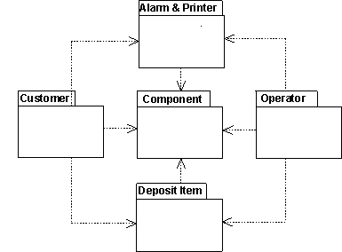

|
Импорт зависимостей между пакетами - важный аспект формирования структуры модели объекта. Один пакет зависит от
другого, если любой из его классов обладает отношениями, которые можно перенести на классы из второго пакета. Для
установления таких зависимостей применяется импорт зависимостей из одного пакета в другой пакет, от которого зависит
первый.

Зависимости между пакетами выражаются в виде импорта зависимостей.
Ниже приведены рекомендации по установлению импорта зависимостей:
-
Прежде чем начать работу с моделью объекта, создайте схемы зависимостей, чтобы опираться на них в процессе работы.
-
После создания модели заносите зависимости в эти схемы. Для этого обновите импорт зависимостей в модели объекта.
-
Если вы разделили модель на пакеты на ранних этапах, с помощью импорта зависимостей укажите, где эти зависимости
можно установить.
-
Зависимости между пакетами влияют на удобство изменения системы. Модель объекта будет проще изменять, если:
-
Установите внешние зависимости для минимального количества классов пакета. Если зависимости будут установлены для
слишком большого числа классов, пакет будет перегружен, и его нужно будет разделить на два более мелких пакета.
-
Рекомендуется, чтобы каждый пакет зависел от небольшого числа других пакетов.
-
Тестируйте каждый пакет отдельно. Это означает, что необходимо протестировать пакет путем моделирования того
пакета, от которого он зависит. Другие пакеты не должны быть полностью или почти полностью реализованы. При
тестировании пакетов по отдельности будет проще осуществлять разработку и обслуживание системы для каждого пакета.
-
Располагайте основные компоненты модели объекта в отдельных пакетах, от которых зависят другие пакеты. При наличии
пакетов с компонентами модели объекта строго контролируйте процесс выпуска, потому что некоторые части системы
могут зависеть от изменений в этих пакетах.
Пример
Предположим, в механизме по переработке отходов вы обнаруживаете общие свойства классов Панель Клиент и
Панель Оператор. Эти две общие функции вы объединяете в новый класс Панель и помещаете его в пакет
Панели. Для использования этих функций другие два класса могут ссылаться на новый класс. Поскольку классы
принадлежат к двум отдельным пакетам, эти пакеты будут зависеть от нового пакета. Такое упрощение структуры
подразумевает, что эти общие функции должны выполняться только в одном месте.
|